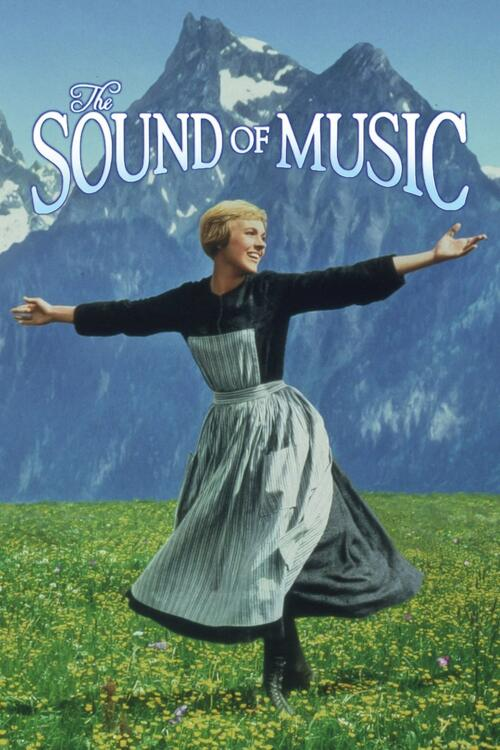
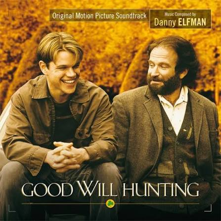
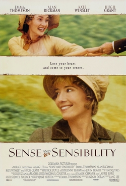
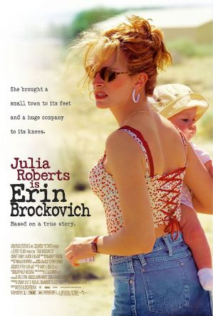
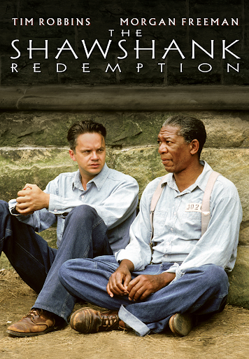

Este link vai levar-te para uma das minhas cenas e músicas favoritas deste filme.




| Filme | Elenco Principal | Data de Estreia em Portugal |
| Música no Coração |
|
10 de Janeiro de 1966 |
| Good Will Hunting |
|
20 de Março de 1998 |
| Sense and Sensibility |
|
8 de Março de 1996 |
| Erin Brockovich |
|
29 de Março de 2000 |
| Condenados de Shawshank |
|
31 de Março de 1995 |